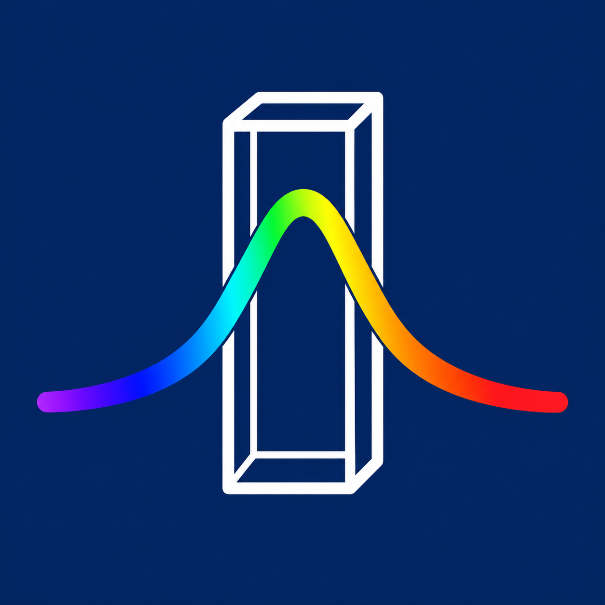

NaCl 농도가 증가할 때 mCP 용액의 가시광 흡수 스펙트럼은 어떻게 변하는가?
최대 흡수 파장(λmax), 최대 흡광도, 434 nm와 578 nm 부근의 흡광도 및 흡광도 비를 비교해 규칙성을 탐색합니다.
2026 복성고 과학 과제연구
NaCl 농도에 따른 mCP 용액의 가시광 흡수 스펙트럼을 탐구하고, 실험 자료와 분석 도구를 빠르게 공유합니다.
01 / RESEARCH
일정한 조건에서 NaCl 농도만 조절하고 m-cresol purple(mCP)의 가시광 흡수 스펙트럼 변화를 정량적으로 비교합니다.
최대 흡수 파장(λmax), 최대 흡광도, 434 nm와 578 nm 부근의 흡광도 및 흡광도 비를 비교해 규칙성을 탐색합니다.
0.0, 0.4, 0.6, 0.8, 1.0, 1.2, 1.4, 1.6 M
λmax, 최대 흡광도, 두 주요 파장의 흡광도 비
mCP 농도, pH, 온도, 총부피, 큐벳, 혼합 후 대기 시간
02 / METHOD
같은 기준으로 제조·측정·분석하여 농도 외 요인이 결과에 주는 영향을 줄입니다.
농도 단계와 반복 횟수를 정하고 통제 변인을 고정합니다.
각 농도의 NaCl 용액에 같은 양의 mCP와 완충용액을 넣습니다.
농도별 바탕 보정 후 400–700 nm 범위를 무작위 순서로 측정합니다.
평균·표준편차·회귀 분석으로 변화 경향과 이상치를 함께 검토합니다.
그래프, 원자료, 분석 조건과 해석을 함께 기록합니다.
해석 원칙 — mCP는 산·염기 지시약이므로 pH가 달라지면 스펙트럼도 크게 달라질 수 있습니다. 따라서 염 농도의 영향만 비교하려면 모든 시료의 pH를 같은 값으로 유지해야 합니다.

03 / TOOL
CSV·XLSX 스펙트럼 데이터를 불러와 전처리하고, 주요 파장과 λmax를 분석해 PNG 그래프로 저장하는 Windows용 도구입니다.
86833726CF66858EADEE5A2B1B84F3F0F4F88943B852B48C93560495208D2F9F지원 환경: Windows 10/11, 64비트
04 / RESOURCES
분석 도구, 원자료, 수정 요청을 연결해 연구 과정의 정보를 한곳에서 확인합니다.